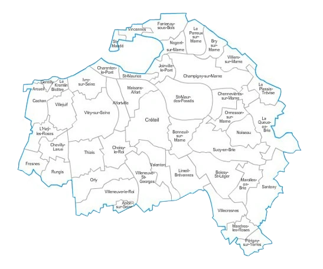

Débouchage de canalisations : En Val-de-Marne (94), nous intervenons pour éliminer efficacement tout engorgement de vos canalisations. Grâce à notre matériel professionnel et notre réactivité, nous rétablissons rapidement la circulation de l’eau dans vos réseaux.
Assainissement IDF
SERVICES


Inspection caméra : Grâce à la technologie d’inspection par caméra, nous détectons avec précision les anomalies dans vos canalisations sans travaux destructifs. Intervention rapide dans tout le 94 pour un diagnostic fiable et détaillé.
Bacs à graisse : Nous assurons la vidange, le nettoyage, l’entretien et l’installation de bacs à graisse dans le Val-de-Marne. Nos interventions préviennent les bouchons et garantissent un bon écoulement des eaux usées, dans le respect des normes sanitaires.


Cuve à fioul : Nous réalisons la vidange, le nettoyage, la neutralisation et la dépose de cuves à fioul dans le 94. Conformes aux normes environnementales, nos interventions sont propres, sécurisées et rapides.
UNE ÉQUIPE EXPÉRIMENTÉE ET UN MATÉRIEL À LA POINTE DANS LE VAL-DE-MARNE (94)
Pour toutes nos interventions dans le 94 — cuves à fioul, bacs à graisse, inspections caméra et débouchage de réseaux — nous disposons de véhicules spécialisés : camions de pompage, poids lourds pour le curage, et véhicules compacts pour les accès difficiles. Nos techniciens expérimentés utilisent ces équipements modernes pour garantir des prestations rapides et précises, que ce soit en urgence ou dans le cadre d’un entretien planifié.
NOS TARIFS EN VAL-DE-MARNE
DES PRIX JUSTES POUR DES SERVICES DE QUALITÉ
Nos prestations en vidange de bac à graisse, cuves à fioul, inspection caméra et débouchage sont proposées à des tarifs transparents et compétitifs. Nous mettons un point d'honneur à offrir un excellent rapport qualité/prix à tous nos clients du Val-de-Marne. Demandez votre devis gratuit dès maintenant.
DEVIS GRATUITPOURQUOI CHOISIR ASSAINISSEMENT 94 ?
Dans le Val-de-Marne, Assainissement 94 est votre partenaire de confiance pour toutes vos demandes en assainissement. Nos équipes réactives et rigoureuses interviennent pour des travaux de qualité, dans le respect des normes et des délais. Avec nous, vous bénéficiez d’un accompagnement professionnel de A à Z.
NOS CONTRATS VOUS LIBÈRENT DE TOUS SOUCIS – ASSAINISSEMENT 94

CONTRATS PONCTUELS ET ANNUELS
Avec nos contrats d’assainissement sur mesure, libérez-vous des tracas liés à vos travaux dans le Val-de-Marne. Chez Assainissement 94, nous savons combien il est important d’offrir à nos clients une tranquillité d’esprit complète. Nos formules, qu’elles soient ponctuelles ou annuelles, détaillent toutes les étapes du processus, les délais et les coûts associés, pour vous garantir un suivi transparent et un service d’excellence.
ZONE D'INTERVENTION – ASSAINISSEMENT 94
Assainissement 94 intervient en urgence ou sur rendez-vous dans tout le Val-de-Marne et ses communes limitrophes. Contactez-nous au 01 69 52 00 23 ou via notre formulaire de devis. Nous assurons une réponse rapide et efficace dans les villes telles que Alfortville - Arcueil - Cachan - Champigny-sur-Marne - Charenton-le-Pont - Chevilly-Larue - Fontenay-sous-Bois - Fresnes - Gentilly - Ivry-sur-Seine - Joinville-le-Pont - Le Kremlin-Bicêtre - Maisons-Alfort - Nogent-sur-Marne - Saint-Maur-des-Fossés - Saint-Maurice - Thiais - Villejuif - Villiers-sur-Marne - Vincennes
UN SERVICE COMPLET EN ASSAINISSEMENT DANS LE VAL-DE-MARNE (94)
Notre équipe du 94 intervient rapidement pour tout débouchage de canalisation : WC, évier, colonne, ou réseau principal. Grâce à notre matériel haute pression et notre savoir-faire, nous rétablissons un écoulement fluide et durable.
Pour détecter avec précision les anomalies, nous utilisons une caméra d’inspection permettant un diagnostic visuel complet de vos canalisations, sans démolition.
Nous assurons également la vidange, le nettoyage et l’entretien de bacs à graisse, indispensable pour les particuliers comme les restaurateurs du Val-de-Marne.
Enfin, notre équipe prend en charge la vidange, neutralisation et dépose de cuves à fioul, en conformité avec les normes environnementales.
NOS VALEURS
EXIGENCE
LA QUALITÉ AU CŒUR DE CHAQUE INTERVENTION
Nous mettons un point d’honneur à réaliser chaque prestation avec précision et sérieux, pour garantir des résultats durables.
HUMILITÉ
ÉCOUTER POUR MIEUX SERVIR
Chaque situation est unique : nous prenons le temps de comprendre vos besoins pour proposer des solutions adaptées et efficaces.
RÉACTIVITÉ
UN ENGAGEMENT AU QUOTIDIEN
Nous savons que les problèmes d’assainissement ne peuvent pas attendre. C’est pourquoi nous agissons vite, avec les bons outils.
FIABILITÉ
UNE RELATION DE CONFIANCE
Transparence, ponctualité et respect des engagements : nos clients savent qu’ils peuvent compter sur nous.